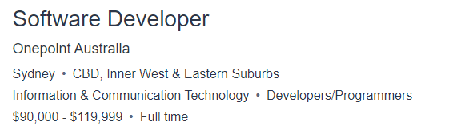
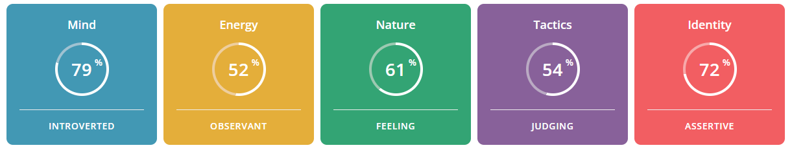
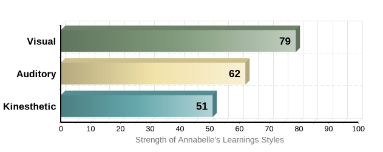
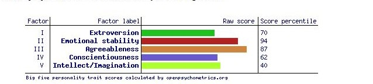

- #: S3954477
- e: S3954477@student.rmit.edu.au
- n: Australian
- e: Bachelor of Primary Education
- Wonderlust is my favourite word.
Annabelle Petschler
Personal Information
Interest in IT
My interest in IT began when I was in my final year of high school in 2004. I remember my mind being blown when my friend showed me her iPod. I could not believe a tiny machine could hold up to 10,000 songs, which was a far cry from my chunky discman that would skip with the slightest movement. My interest and curiosity in the IT world increased to new levels when I became a high school teacher and was astounded by all the cool things my kids were being taught and how clever they were on their iPads. I decided to take a leap of faith and jump into another university degree. RMIT was a great fit for me as I am a new mum to a baby boy, so having the flexibility to study in the comfort of my home and choose my study hours helps me juggle my new mum life. I have a little bit of IT experience where I implemented different programs and apps into my lesson planning in the classroom, however I am still a novice in the IT world. Throughout this degree I expect to lay the foundations of Information Technology and advance my future career in programming.
Ideal Job - Software Developer
p

My ideal job is a software developer. After reviewing various positions on Seek, my attention was drawn to the IT company, One point Australia. This career opportunity offered the successful applicant the chance to join a team that was focussed on becoming a key player in the digital transformation and had 2,500 employees across the globe. This was intriguing as there was opportunity to work in my desired field and work overseas. The role requires the applicant to be involved in all areas of the software development and to create and maintain a wide array of software solutions across multiple technologies encompassing both analysis and design aspects whilst coding solutions within a full-stack environment. The qualifications required are 3 years’ experience with objected oriented programming, front end development and modern JS frameworks (React, Angular), familiarity with back-end development (C#, Java, NodeJS) and exposure to Cloud/DevOps. Further possess excellent written and verbal communication skills, ability to trouble shoot, be at team player and have analytical problem-solving skills.
www.seek.com.au/job/55987471?type=standard#sol=e1f69c4785a890ebfa0278af61b7486a3987db20.com/Skills I have
At present I have the necessary interpersonal skills, excellent verbal and written communication and have a solution-based mindset approach when faced with problems. These skills were acquired from my teaching career where I was constantly involved in team dynamic situations. With these skills I can state that I was able to teach effectively to a diverse range of learners. In terms of obtaining the technical skills I will endeavour to immerse myself in my upcoming subjects that explore Java and Cloud/DevOps. To gain more experience I will endeavour to explore these areas in my own time and apply for graduate entry jobs once I finish my degree to gain industry exposure.
Personality Profile
Myers Briggs Type Indicator
Learning Styles

Big 5 Personalities

Relfection
After completing a range of online tests it has provided myself with the opportunity to understand my personality and learning type and how to use this information to work and learn best moving forward in my degree and my future career. For example, in the 16 personalities test it showed a 79 percent match for an introvert. According to Myer-Briggs introverts are well suited to many situations in the work setting as they’re most likely to listen to others more carefully, thus creates opportunities for more in-depth discussions and reflective insights. Although introverts do prefer spending time alone and can be sensitive to noise, light and crowds, they are great at reading many situations and their reserved nature helps bring balance to the work area. In the category of ‘energy’ my results concluded I am 52 percent observant. This simply means I have tendencies to be highly practical, pragmatic, and down to earth nature. Thus, being an asset when working alone or in team dynamics. In the learning styles of visual, kinestic or audible I tested a whopping 79 percent as a visual learner. This will be crucial information to communicate with my group to allow myself to engage and contribute at an optimum level. This can be simply achieved by simply using Microsoft teams or whiteboards to scribe ideas on to allow myself to reflect on the words visually. The last test I completed was the Big 5 personality test. The results outlined that I tested high for ‘agreeableness’ and ‘emotional stableness’. These qualities are effective in promoting morale and bringing positive energy when working with others or groups members. In summary it is clear this valuable information collected from my results are worthless unless acted upon. It is my responsibility to be aware how different environments can influence my behaviour for the better or worse. Communication is key to ensure we as a team use our strengths and support our weaknesses to our advantage.
Project Idea
The objective of my project idea is to make life a little bit easier for time poor parents. This will be achieved by using Raspberry Pi to detect a significant decrease in the weight of a box of nappies or tin or formula by using sensor technology. A notification is then sent to the users’ smart phone to alert them to they are almost out of the baby product and will need to be filled urgently.
Motivation
According to experts, ‘time poverty’ is on the rise. Most new parents will agree that they are time poor. This is the term given to describe the chronic feeling of having too many things to do and not enough time. This is all too familiar as a first-time mum of a beautiful baby boy, which is where my motivation came from for this idea. Motherhood is the greatest gift that I have been blessed with, however hardships are a part of daily life such as sleep deprivation, exhaustion and having a severe case of the ‘mummy brain’. These drawbacks have without a doubt impacted my ability to think clearly and to be able to remember just the simplest things. I cannot count the number of times I have ran out of nappies or formula after store hours. Alas, this is where my idea was born. Raspberry Pi technology is a cheap and easily assembled solution to this problem that will make a huge difference in the life of a time poor parent.
Description
The basis of this project will use Raspberry Pi technology which will be connected to a load cell. A load cell is a small metal bar that has the capability of weighing items up to 5 kgs. From my research a load cell is more cost effective than buying a scale and much easier to integrate with the other hardware devices as it comes pre-wired with four cables. A HX711 weight sensor will be fixed to the load cell hardware to detect any significant decreases in weight of the baby product. This information will be sent to the Raspberry Pi. Python library will be used to program the Raspberry Pi to measure the weight and read the value of the load cell, which can be read on the LCD display screen. The Raspberry Pi will be programmed to send a notification to the users’ smart phone to alert the parent/carer they are almost out of the baby product using the ‘pushover’ app.
Tools and Technologies
- Raspberry Pi: It is a low cost and easily assessable single-board computer (SBC) built on one circuit board.
- Load cell: A load cell is a force transducer, which will convert the force or pressure into an electrical signal. In this case it is the scales that will measure the weight of the baby product.
- HX711 weight sensor: Required to send data to the Raspberry Pi if the sensor detects a certain weight decrease on the load cell.
- Base:This will be the plywood attached to the top of the load cell to hold the nappy box or baby formula tin.
- Jumper wires:These wires have connector pins at each end and will be used to connect the raspberry pi, LCD and HX711 weight sensor together.
- 12C liquid crystal display (LCD): Is a flat-panel display device to show the weight value.
- USB cable: Used to connect the Raspberry Pi to the computer.
Skills
To successfully create this project, there are many factors to consider. Firstly, I need to choose the program that I will use to create code for my Raspberry Pi. From my research Java or Python will be most effective. However, based on my limited knowledge and experience of coding (3 weeks), I will most likely choose Python as it is the only program I have used so far. The next problem I must solve is to program the Raspberry Pi to send notifications to a smart phone. From my research the ‘pushover’ app seems to be the easiest and most cost-effective program to use to solve this problem. The drawbacks in this project are clearly my inexperience to coding and the fact I have never used Raspberry Pi technology. This will require time to learn how using tutorials online. Lastly, the hardware listed above are easily sourced and are low cost to make this project feasible. The most expensive hardware piece is the Raspberry Pi (approx. $35).
Skills
In summary the project will be deemed successful if the Raspberry Pi is able to detect a weight reduction of the nappy box or baby formula tin and alert the user’s smart phone with a notification that they are almost out of stock. This will solve the original problem of a parent/carer unknowingly or forgetting to restock these important items at a time where stores are close or proximity to store is out of reach.